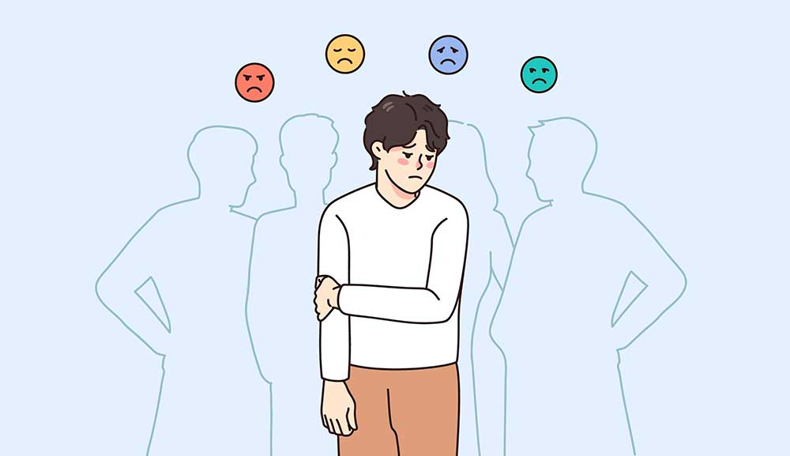

La ansiedad y el estrés forman parte de la vida cotidiana como elementos naturales del estilo de vida de los países desarrollados. Los niños y los jóvenes captan muy pronto la dimensión amenazante del mundo que les rodea, una dimensión amenazante que abarca las relaciones personales, sociales e internacionales. Cuando a estas circunstancias ambientales se unen otros factores de riesgo de tipo genético, temperamental o familiar, puede surgir el cuadro clínico del trastorno de ansiedad.
Causas
| Trauma. Los niños que soportaron maltratos o traumas o que presenciaron eventos traumáticos tienen mayor riesgo de manifestar un trastorno de ansiedad en algún momento de sus vidas. Los adultos que atraviesan un evento traumático también pueden manifestar. trastornos de ansiedad. | Estrés debido a una enfermedad. Tener un problema de salud o una enfermedad grave puede causar gran preocupación acerca de cuestiones como el tratamiento y el futuro. |
| Tener familiares consanguíneos que padecen un trastorno de ansiedad. Los trastornos de ansiedad pueden ser hereditarios. | La falta de de autoreconocimiento y autoacepectación. |
| Acumulación de estrés. Un evento importante o una acumulación de situaciones estresantes más pequeñas de la vida pueden provocar ansiedad excesiva, por ejemplo, la muerte de algún familiar, estrés en el trabajo o preocupaciones continuas por la situación financiera | Personalidad. Las personas con determinados tipos de personalidad son más propensas a sufrir trastornos de ansiedad que otras personas. |
| Otros trastornos mentales. Las personas que padecen otros trastornos mentales, como depresión, a menudo también padecen un trastorno de ansiedad. | Drogas o alcohol. El consumo o el uso indebido o la abstinencia de drogas o alcohol pueden provocar o empeorar la ansiedad |
Sintomas
| Una repentina sensación de pánico y miedo | Inquietud |
| Malestar, náuseas o calambres | Problemas relacionados con el sueño: sueño excesivo o insomnio |
| Problemas relacionados con el sueño: sueño excesivo o insomnio | Dolor torácico |
| Entumecimiento en las manos o los pies | Dificultad para respirar |
| Aumento de la frecuencia cardíaca | Sofocos o escalofríos |
| Temblor repentino | Mareo |
Complicaciones
El trastorno de ansiedad no implica solamente estar preocupado. También puede ocasionar, o empeorar, otros trastornos mentales y físicos, como los siguientes:
| Depresión (que a menudo se produce junto con un trastorno de ansiedad) u otros trastornos de salud mental | Abuso de sustancias |
| Problemas para dormir (insomnio) | Problemas digestivos o intestinales |
| Aislamiento socialor de cabeza y dolor crónico | Aislamiento social |
| Problemas en la escuela o el trabajo | Suicidio |
Prevencion
No es posible prever con certeza qué causa que una persona presente un trastorno de ansiedad, pero puedes tomar medidas para reducir el impacto de los síntomas si te sientes ansioso:
- No es posible prever con certeza qué causa que una persona presente un trastorno de ansiedad, pero puedes tomar medidas para reducir el impacto de los síntomas si te sientes ansioso:
- Mantente activo. Participa en actividades que disfrutes y que te hagan sentir bien contigo mismo. Disfruta la interacción social y tus afectos, que pueden aliviar tus preocupaciones.
- Evita el consumo de alcohol o drogas. El consumo de alcohol y drogas puede provocar ansiedad o empeorarla. Si eres adicto a cualquiera de estas sustancias, la idea de dejar de consumir puede hacerte sentir ansioso. Si no puedes dejar de consumir por tu cuenta, consulta con tu médico o busca un grupo de apoyo para que te ayuden.